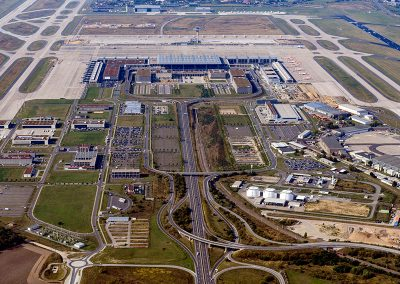
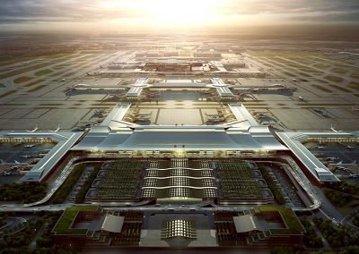
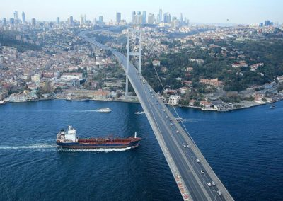

Projects PROJECTS OUR PROJECTS All Airport Highway & Road Rail Frankfurt International Airport “Rhein-Main“ (FRA), Germany – Renovation Baggage Claim Al Ain Airport (AAH), United Arab Emirates New Maintenance Hangar for A330 Refuelling Aircrafts Saarbrücken International Airport, Germany – New Maintenance Hangar Bangkok Airport “Suvarnabhumi“(BKK), Thailand – New Passenger Terminal Complex Dubai Airport, U.A.E Khartoum New Int’l Airport (KNIA), Sudan Passenger-, Hajj-, President- and GA-Terminal for New Greenfield Airport Kuwait International Airport (KIA), Kuwait New Terminal 2 Bangalore New International Airport – Airport Development  Berlin Brandenburg Int’l Airport (BBI), Germany. Airside Services for the New Airport  Flughafen Xi`An Xianyang International (XIY), China – Strategic Consultancy Services for the Airport Operator Kumasi International Airport (KMS), Ghana. Master Plan Services for Greenfield Airport NHAI Egnatia Odos  First Bosporus Crossing Bang Na – Pa Kret Expressway Assafar Motorway Baseline 2 Road Project M1 Motorway Islamabad – Peshawar Istanbul Peripheral Motorway and Second Bosphorus Bridge A23 Coulsdon Inner Relief Road Tonbridge Route Clearance Sevenoaks Tunnel Timberly Viaduct Sussex Coast Line Catford Bellingham Bridge Farringdon Station Richmond Station Bromley South Station Heathrow Gateway / Feltham